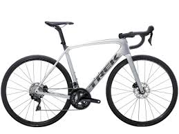
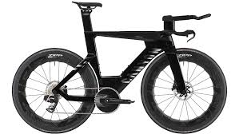
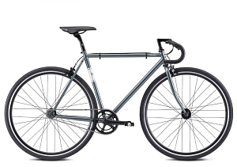

Команда Visma | Аренда велосипеда (бывшая команда Jumbo-Visma) впервые представила свои велосипеды Cervélo в 2021 году и сразу же начала одерживать исторические победы. Они продолжили в том же духе и в 2023 году добились беспрецедентного результата — выиграли все три Гранд-тура за один сезон.